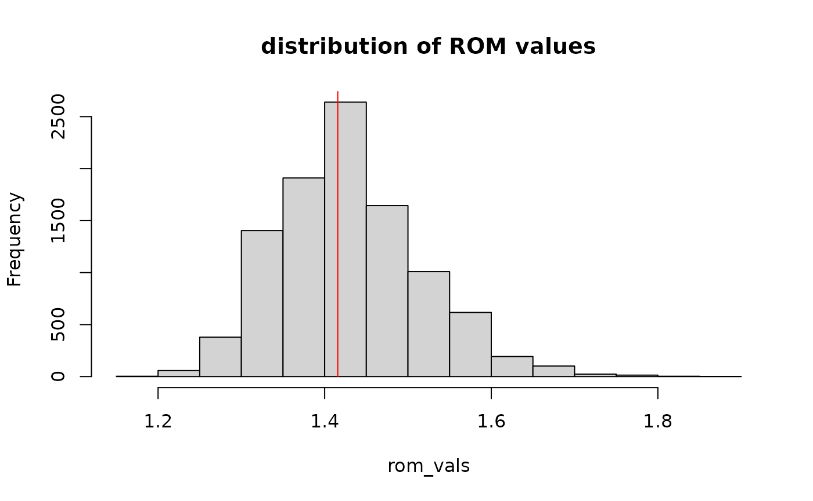

Introduction
This vignette describes how to quantify stratigraphic order using the metrics defined by Burgess (2016).
Setup
First, we define a stratigraphic column:
s = as_stratcol(thickness = runif(90), # random bed thicknesses
facies = rep(c(1,2,3), 30)) # repeat facies 1, 2 and 3
plot(s)Estimating Markov metrics
We can then estimate the transition matrix between facies using
m = transition_matrix(s)
m
#> from
#> to 1 2 3
#> 1 0 0 1
#> 2 1 0 0
#> 3 0 1 0
#> attr(,"class")
#> [1] "fa_tran_mat_p"and estimate the markov order metric (MOM) from it using
get_mom(m)
#> [1] 1Estimating run metrics
The run order metrics (ROM) can be estimated using
rom_observed = get_rom(s)
rom_observed
#> [1] 1.41573To put this value into context, we randomize the section to estimate the distribution of rom values
n = 10000
rom_vals = rep(NA, n)
for (i in seq_len(n)){
randomized_column = shuffle_col(s)
rom_vals[i] = get_rom(randomized_column)
}
hist(rom_vals,
main = "distribution of ROM values")
lines(x = rep(rom_observed, 2), y = c(0,n), col = "red")
Here the red line indicates how extreme the rom value of the
stratigraphic column s is compared to the expected
distribution of rom values based on random reordering of the beds.
Estimating Markov Order Metrics
To estimate markov order metrics, some data preparation is needed to make sure all assumptions on the encoding of the stratigraphic column are met. Let’s start by defining an example stratigraphic column:
set.seed(1)
s = as_stratcol(thickness = runif(30), fa = rep(c(1,2,3), 10)) # uniform bed thickness, ordered facies
s = shuffle_col(s, allow_rep = TRUE) # randomize order of beds, allowing for repetitions
plot(s)Check for successive beds with identical facies
MOM only examines transitions between facies, and ignores beds with identical facies. To meet this criterion, we first need to merge all beds with identical facies:
s_merged = merge_beds(s, mode = "identical facies")
plot(s_merged)### Rearrange facies names
The next assumption is that facies are enumerated using integers
based on their order of appearance in the column. We can do this using
order_facies_names:
s_ord_names = order_facies_names(s_merged)
plot(s_ord_names)### estimating the transition matrix
Now we can estimate the facies transition matrix:
m = transition_matrix(s_ord_names)
m
#> from
#> to 1 2 3
#> 1 0.0000000 0.8333333 0.1666667
#> 2 0.1428571 0.0000000 0.8571429
#> 3 0.7142857 0.2857143 0.0000000
#> attr(,"class")
#> [1] "fa_tran_mat_p"Note that because we have merged beds with identical facies, entries on the diagonal are 0 - facies do not transition into themselves.
Estimating MOM
From the facies transition matrix, MOM can be estimated via
get_mom(m)
#> [1] 0.6031746A MOM value of 0 indicates unordered facies, a value of 1 reflects perfect order and deterministic transitions between facies.
Further reading
See also
vignette("stratcols_doc")for a description of the classes used in the package and a description of the larger scale structure.
See
vignette("stratcols")for an overview of the available functionalit of the
stratcols package, including how to create stratigraphic
columns, plot them and modify them.